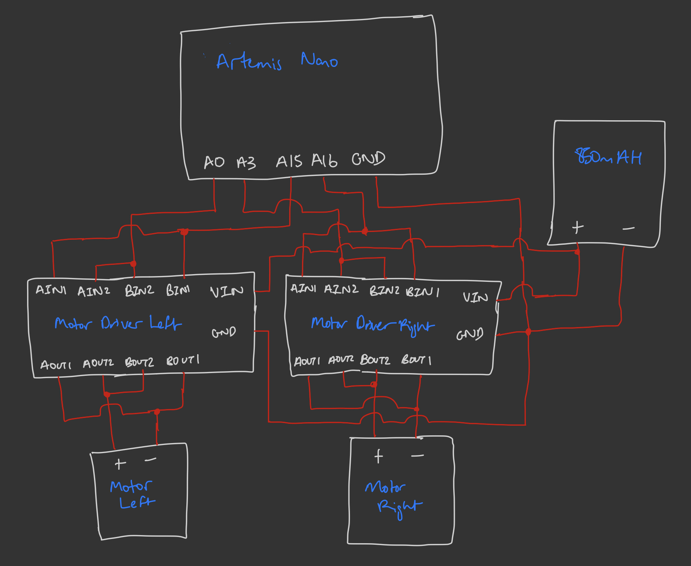
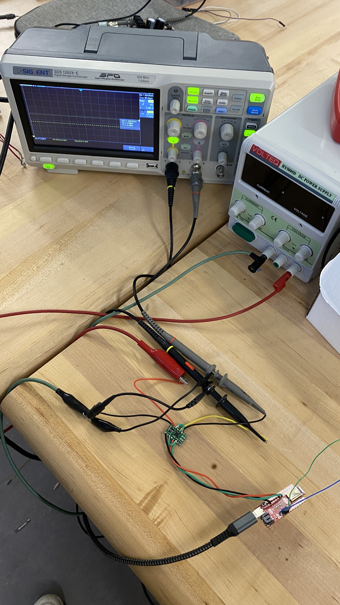
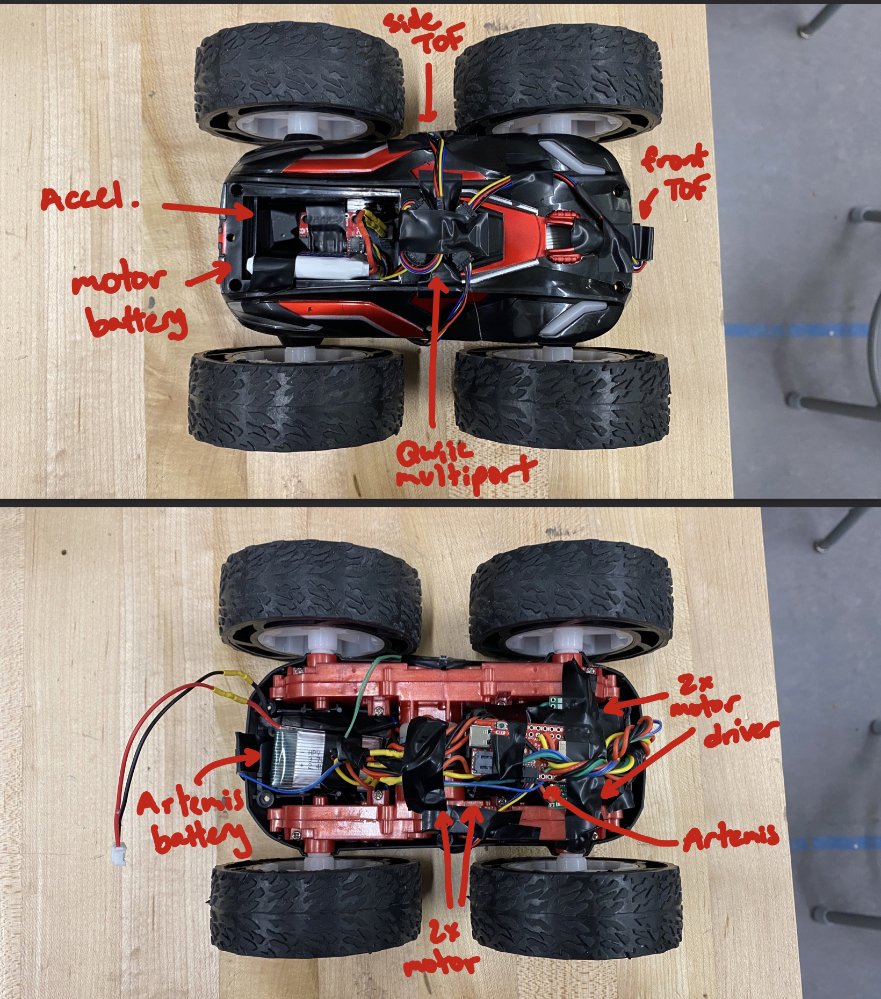

Lab 5
Objective:
In this lab, I replace the control electronics of the RC vehicle with the Artemis, sensors, and motor drivers assembly. In doing so I experiment with the motor drivers, how they are powered and programmed, and with open loop control.
Prelab
Having read the documentation for the dual motor driver module, I understood the connections needed to use it for the RC car's brushed DC motors. To power the module the 3.7V operating voltage of the Artemis (from the battery) was sufficent. To control the two output channels, AOUT and BOUT, and their respective two sides 1 and 2, we needed to supply PWM signals to the corresponding sides 1 and 2 of the AIN and BIN channels. As we have 2 such dual motor drivers modules but only 2 motors, we could parallel the two channels within each module (as they share a common clock) in order to double the total current suppliable, from 2A to 4A in short bursts, and from 1.2A to 2.4A continous. Exlcuding the connections with the sensors from previous labs, this a diagram of how the motor drivers and 850mAH battery are connected to the Artemis:

Notice ground is shared between all components, and that all pins on the Artemis are PWM-capable as per the datasheet. I chose to make all connections with stranded wire to allow flexibility in mounting, adn ease of twisting the wires to reduce EMI. I also soldered the wires directly onto the modules/Artemis without headers to reduce possible points of poor soldering. We were asked to power the motor and the Artemis with separate batteries to reduce shared noise, in particular across from the motors to the sensitive sensors.
Lab Tasks
Single Motor Driver
First, we verified the behavior of a single motor driver, wired as per the diagram above, given PWM signals as if driving the motor in both directions. To do so, I wired the same sides for A and B together on both the INs and OUTs side using short wires, then soldered longer wires corresponding to side 1 and side 2. The INs side were soldered onto the Artemis pins A0 and A15, while the OUTs were hooked up to oscilloscope probes. The VIN was connected to a power supply positive terminal, and GND was shared between it, the power supply negative, and a GND on the Artemis. The power supply was set at 3.7V to match the battery used later, and current limited to 4A as per the maximum draw of the parallel coupled motor driver.

Writing a short script to step through 5 different PWM values from 50 to 250, and while setting the other side to 0, allowed us to see the duty cycle change in each state on the scope. The duty cycle is the percentage of time in which the output is high, dictating the effective voltage at the output, and is written to pin as a number mapped from 0-255. Alternating which side is receiving the PWMs, the valid result is shown below:
Driver Integration
Having removed the control electronics from the car, I then soldered the OUT sides to the pins of its right motor. Keeping these wheels unloaded by putting the car right side up, I was able to verify the motor driver spins the wheels, still using the power supply, by simply writing PWM in a given direction at speed 150, then writing PWM in the opposite direction at speed 150.
The direction is easiest to verify as the wheels come to a stop after switching off the power supply as follows:
Replacing the power supply with the 850mAh battery and running the same 2-line scripts yielded these results, identical to those from the power supply tests. This time, instead of powering off the scope, we unplugged the Artemis.
Having verified that the motor driver works as intended with this wiring and code, I simply replicated it on the other motor driver, using PWM pins 3 and 16 on the Artemis. Leaving the battery to power the motors, we could then write a script to test both directions on both the left and right motors in turn.
I also wrote a script to drive forwards and drive backwards to verify the two sides could run together.
System Installation
Having now completed the entire electrical assembly for the RC car, I installed it into the chassis. I did so keeping a few goals in mind: have a front and a side facing TOF, have the accelerometer be parallel to the ground, shield all components from as much EMI noise as possible, and provide easy access to batteries for replacement and the Artemis for reprogramming. This all needed to be done in addition to preventing components from falling off during motion, and not hindering any motion either. I also sought to twist wires to cancel EMI effects where possible. My final mounting is as follows:

Loaded Driving
In order to use the car, it is important to understand the minimum parameters required to have it move. By manually changing PWM values until the car stopped moving forward/backwards, and on-axis rotating, I found that at a common PWM 30 the car barely moved straight, while with a single motor at PWM 50 the car barely turned. The motion at these bounds looks very similar to each other, as in the clip below:
Being able to drive the car in a straight line is also very important, thus the following video was taken of the car driving forwards and backwards with both motors at 100 PWM for 1.5 seconds each (traversing about 6 feet each).
As we see, there was a right drift of about 2 feet off the guiding line. As per the straight line code above, we see the PWM of both motors is equal. Thus, we neeeded a calibration factor to improve the straight line precision. After much manual trial and error, and keeping mindful of how a weaker battery would impact speed, the best factor I could find was setting the right side PWM to the left side multiplied by 1.7 (bounded within 255 as an int). While this result is still subpar, the new measured drift is an improved 1 foot, a 50% reduction.
Finally, conducting some simple open loop control, I sought to run the car forward for 1 second, have it do a spot turn by running one side forward and the other side backwards for another, and reverse for a final second.